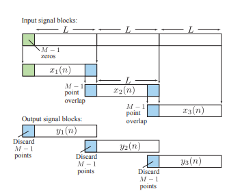
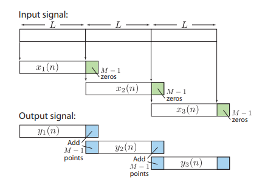

Question 1. Which convolution is used for Overlap Add method?
Linear convolution / Tabular method Circular convolution/Matrix method Discrete Convolution Continuums Convolution
Question 2. Which convolution is used for Overlap Save method?
Question 3. For the given sequence find the length of blocks { 1,2,3,4, 2,1,3,1} using overlap save method h[n] = {2,1}
4 5 2 3
Question 4. Find Length of the blocks using overlap add method for the given sequence { 3, 0,-2,0,2,1, 0,-2,-1,0} h[n] = { 2,2,1)
Question 5. For the given sequence x[n] { 1,2,3,4, 2,1,3,1} find x_1(n) using overlap save method h[n]= {2,1}
{0,0,1,2} {3,4,2,1} {0,1,2,3} {1,2,3,4}
Question 6. For the given sequence find x_2(n) using overlap add method x[n]= { 3,0,-2,0,2,1, 0,-2,-1,0} h[n] = { 2,2,1)
{3,0,2} {0,2,1} {0,-2,-1} {0,0,0}
Question 7. In Overlap save method of long sequence filtering, what is the length of the input sequence block?
L+M+1 L+M L+M-1 L
Question 8. In Overlap add method, what is the length of the input data block?
L+M+1 L+M L-1 L
Question 9. 
Overlap save method Overlap add method Overlap add & save method None of the mentioned
Question 10. 
Question 11. For the given sequence find the output y[n] using overlap save method x[n]={1,2,3,4,2,1,3,1} h[n] = {2,1}
{1,4,7,10,10,5,5,7,2} {1,4,7,10,10,7,5,7,3} {1,4,7,10,10,7,5,7,4} {1,4,7,9,10,5,5,7,2}
Question 12. For the given sequence find the output y[n] using overlap add method x[n]= {3,0,-2,0,2,1,0,-2,-1,0} h[n] = {2,2,1)
{6,6,-1,-4,2,6,4,3,-6,-4,-1,0} {6,6,-1,-4,2,6,4,-3, 6,4,-1,1} {6,6,-1,-4,2,6,4,-3,-6,-4,-1,0} {6,6,1,-4,-2,6,4,-3,-6,-4,-1,0}
Question 13. Circular Convolution is denoted by:
w[n] = x[n] ⊗ h[n] w[n] = x[n] h[n] w[n] = x[n] . h[n] None of the above
Question 14. If the length of input sequence in circular convolution are different then:
Zero padding not required Zero padding required Both a and b None of the above
Question 15. For given sequence x_1(n)= { 1,2,3,4} and x_2(n)={5,6,7,8} find y_0 using circular convolution :
68 69 70 66
Question 16. The output sequence in circular convolution is :
Periodic Non periodic Both a and b None of the above
Question 17. Methods adopted to perform circular convolution are:
Matrix method Concentric circle method Both a and b None of the above
Score out of 17= Score in percentage =